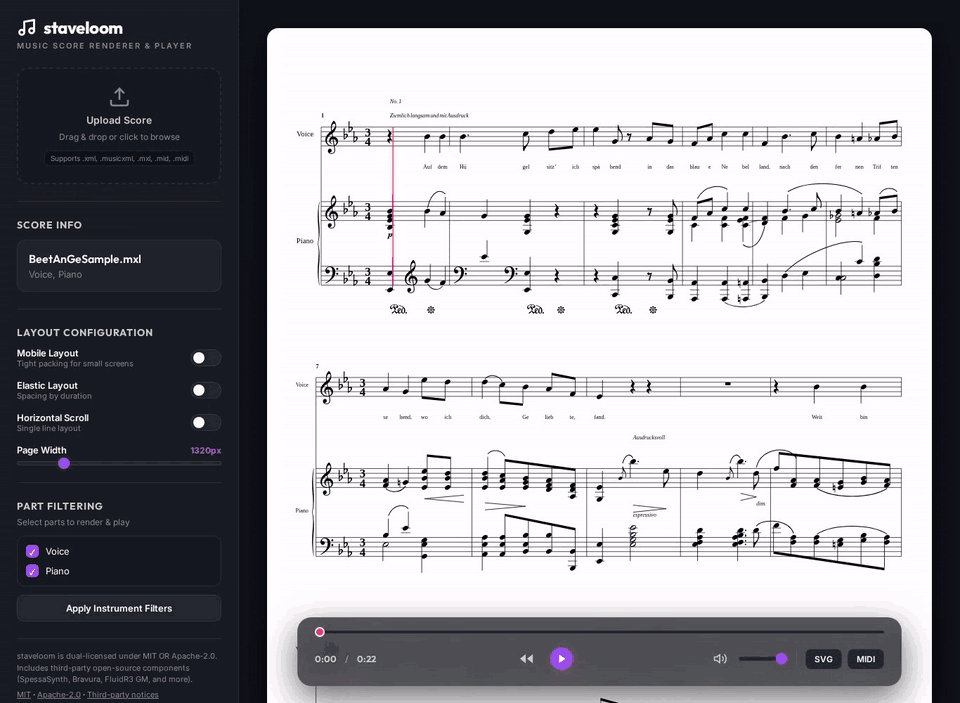

A MusicXML parsing and SVG rendering engine written in Rust — shipped as a CLI tool and a browser-based interactive web player.
The web player is fully client-side: rendering (WASM), MIDI synthesis (SpessaSynth), and playback all happen in the browser — no server required.

Reads MusicXML 3.1/4.0, compressed
.mxl archives, and standard MIDI
files.
Beams, slurs/ties, tuplets, ornaments, guitar tab & bends, dynamics, lyrics, and chord symbols — rendered as publication-quality SVG.
Exports standard MIDI (SMF) from any score, and renders MP3 audio from the CLI with ornaments expanded into real note sequences.
Select and render only the parts you need — the same filter applies consistently across SVG, MIDI, and audio output.
Resolves repeats, volta endings, D.S./D.C., and Segno/Coda into actual playback order, with a cursor that follows along in real time.
Drag-and-drop MusicXML or MIDI, real-time SoundFont synthesis, and an installable, offline-capable PWA.
Rendering (WASM), SoundFont synthesis, and playback all run entirely in your browser. No server, and it keeps working offline.
The same parsing, layout, and MIDI engine backs the CLI, the web player, and a standalone crate — no rendering logic duplicated or drifting between a "native" and a "web" version.
Most simple renderers just play notes top-to-bottom. Staveloom fully resolves the repeat/jump structure before playback, so the cursor never loses sync.
Mobile layout mode is auto-detected by viewport and repacks the score for a phone screen — it doesn't just shrink the desktop layout.
Large scores only mount the systems currently in view (IntersectionObserver-based), so even hundred-page scores stay smooth instead of choking the DOM.
Per-instrument SoundFont files (1–5 MB each) are fetched on demand instead of shipping one giant combined bank — faster first load, less bandwidth.